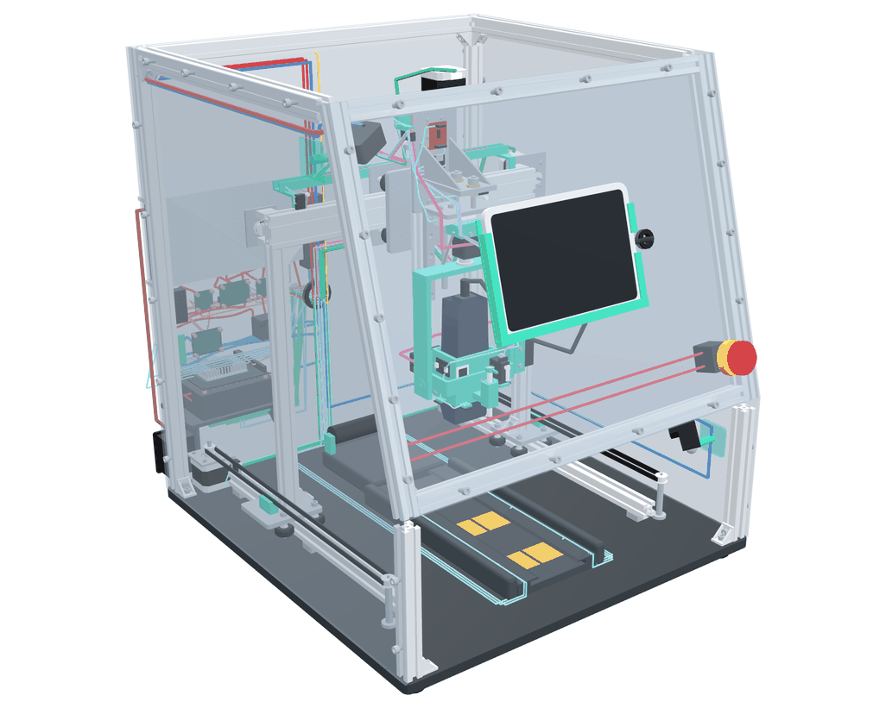

Ultrasound-guided cannulation for dialysis
A machine that finds the vein and marks the spot.
UltraVena is a tabletop machine that scans a forearm with a motorised ultrasound probe, finds the fistula, and stamps an ink dot where the needle should go. Nothing pierces the skin.
Design stage. CAD version 7, reworked after the team's design review, is the current iteration and nothing has been built yet.

- axes of motion
- 6
- mm, fits a clinic table
- 516 × 558 × 590
- most the probe can press, by estimate
- ~7 N
- estimated build cost
- ~$1,390
How one scan runs
Arm in
The user rests a forearm on the padded rest, takes hold of the grip, and the lights come on.
Find the arm
Two webcams find printed markers on the arm and on the probe head.
Pick a start
The user taps a spot on the iPad.
Touch down
Four distance sensors read the skin, the probe tilts square to it and lowers until it feels light contact.
Scan
The probe steps along the arm while a model outlines the vessel in each image.
Watch
Pressure pads and the webcams check the arm has not moved.
Choose
Software picks the point from the vessel's depth, width and position.
Mark
The probe lifts, shifts, and a small servo dips an ink pen onto the skin.
Where the project stands
- In progress
Mechanical design
CAD version 7 is the current iteration, still open to changes
- In progress
Parts list
Repriced for version 7 at about $1,390, part swaps still expected
- In progress
Wiring plan
Rewritten for the iPad, the head sensor board and the relay stop, will change as parts are finalised
- In progress
Vessel model
Version 2 works on generated images, waiting on real scans
- In progress
Ultrasound link
The iPad app will read frames through the Butterfly SDK, access and details to settle
- Not started
Control software
Planned, not yet written
- Not started
Physical build
Not started
- Not started
Testing on an arm
Not started
The documents
Hardware Brief
The design as it stands in CAD version 7, why it is built this way, and how the two probe versions differ.
Wiring and Software
What plugs into what, and which piece of software talks over each cable.
Parts List
Every part to order, with supplier, part number, price and what still needs checking.
Parts Research Brief
What each part does, the current pick, and what to look for when hunting for something cheaper or better.
Vessel Model
The image model that outlines the vessel in each ultrasound frame, and where it stands.
3D Model
Turn the CAD model around in the browser, or download it.
Latest updates
Design version 7 after the team review
The design was reworked after the team's design review, and the estimated cost fell from about $2,155 to about $1,390. Every page, the 3D model and the downloads now show version 7.
Project site goes up
This site now holds the hardware brief, the wiring and software plan, the parts list, the parts research brief, the vessel model page and a live 3D view of the CAD model.
The team
UltraVena is the senior design project of Team 7 in Electrical and Systems Engineering at the University of Pennsylvania.
- Jonathan Farias Dutra RodriguezTeam 7
- Brandon ParkanskyTeam 7
- Jose GonzalezTeam 7
- Charlotte TanTeam 7
- Gabriel SolaTeam 7
- Dillon MalkaniTeam 7
- Prof. Rahul MangharamFaculty advisor
- Dr. Sandeep AggarwalClinical advisor